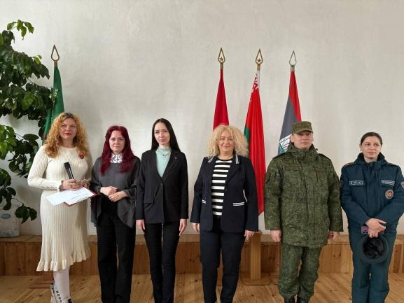
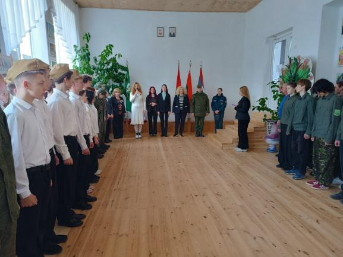
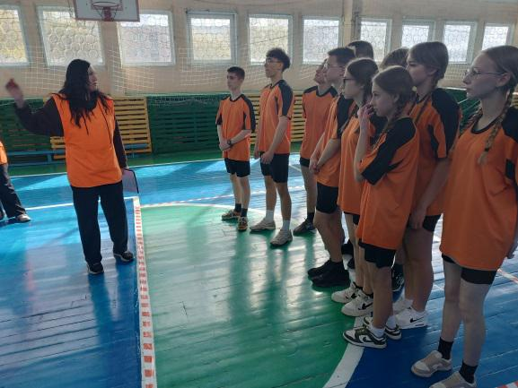
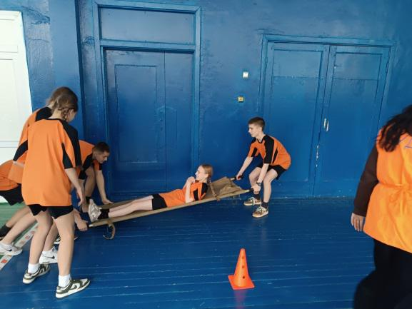
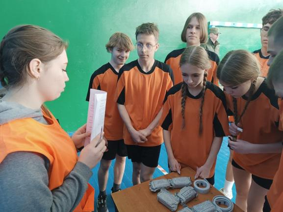
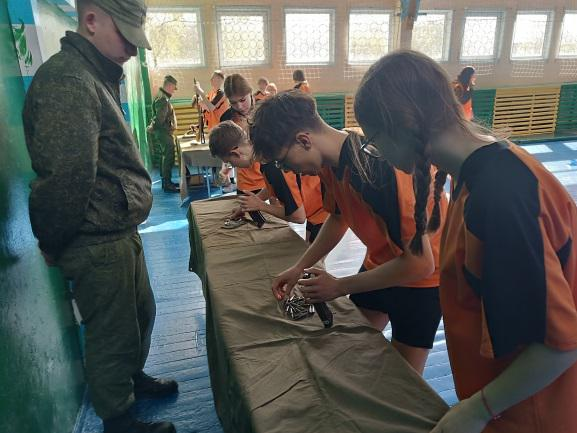
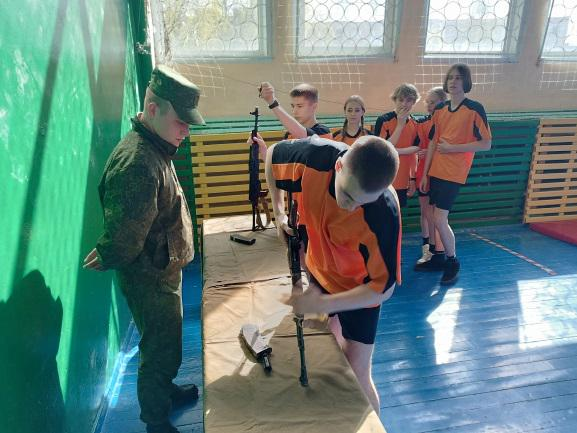
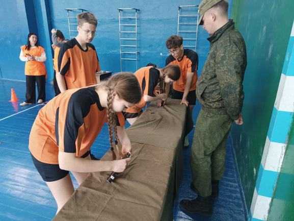
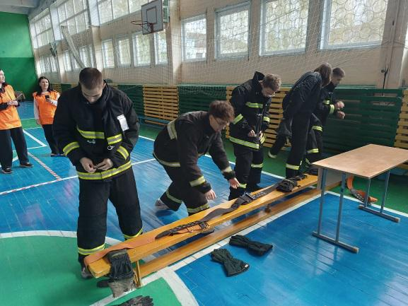
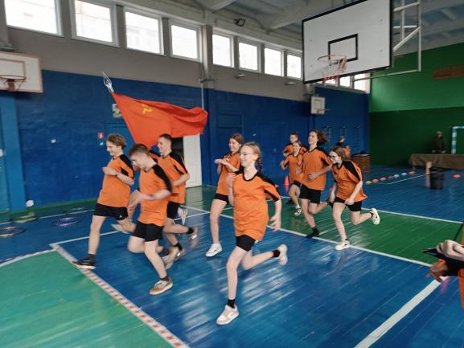

ОРЛЯТА, ВПЕРЕД!
28 апреля в ГУДО «Борисовский центр экологии и туризма» состоялся завершающий этап военно-патриотической игре «Орленок». 13 команд Борисовского района представили свои учреждения образования.


Торжественное открытие игры в зале центра началось с приветственного слова директора Екатерины Ракицкой, которая подчеркнула, что именно такие события зажигают искру патриотизма в сердцах молодежи. После исполнения гимна, к участникам обратились почетные гости: первый секретарь Борисовского районного комитета ОО «БРСМ» Елизавета Волковец, старший инспектор сектора пропаганды и взаимодействия с общественностью Борисовского горрайотдела по ЧС Милана Сташкевич и представитель полка связи подполковник Максим Соловьев. Они тепло поздравили всех присутствующих и выразили благодарность за участие.


Нашу гимназию представила команда «Патриоты». Все ребята являются членами военно-патриотического клуба «Юнармеец».



Несмотря на прохладную погоду, юнармейцы показали высокий уровень строевой подготовки и настоящий командный дух. Отличные результаты в неполной разборке и сборке автомата Калашникова, снаряжении и разряжении магазина, надевании боевой одежды спасателя, теоретические знания основ оказания первой помощи, позволили ребятам войти в число победителей и занять второе место, уступив только команде из средней школы №7. Торжественное награждение победителей на всех этапах игры состоится 15 апреля.


